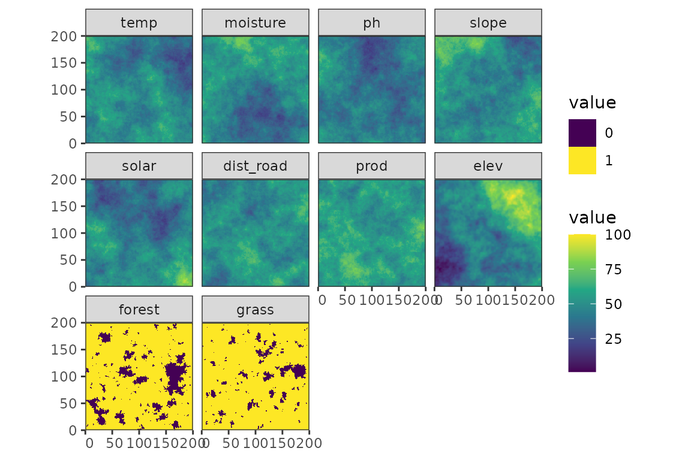
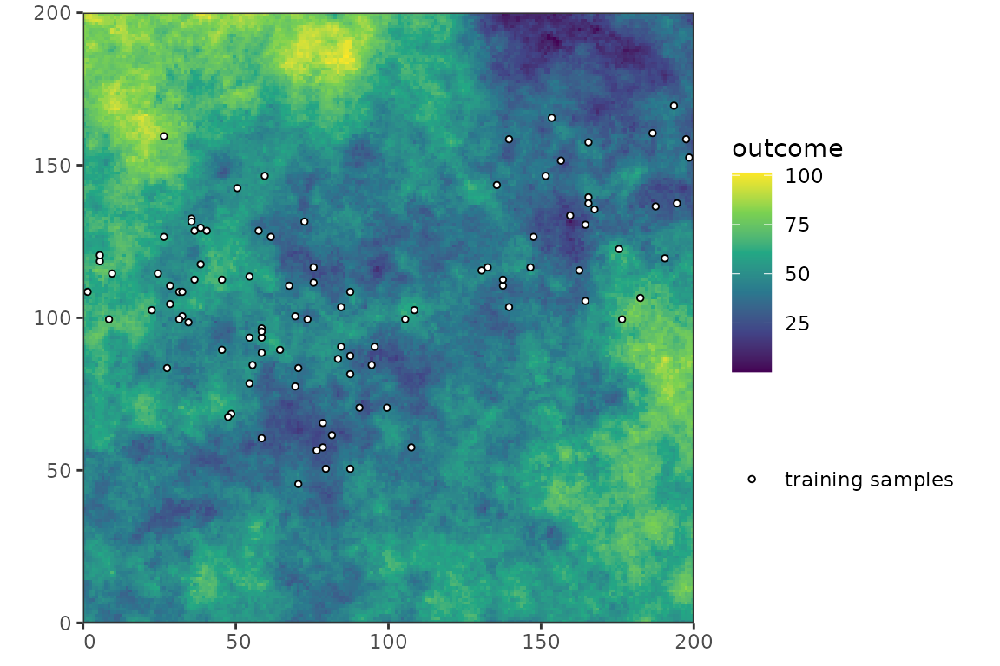
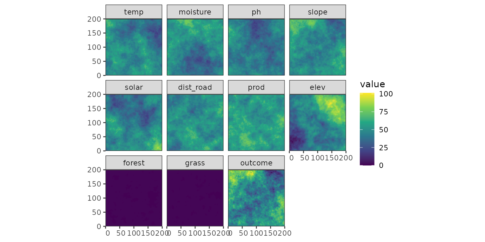
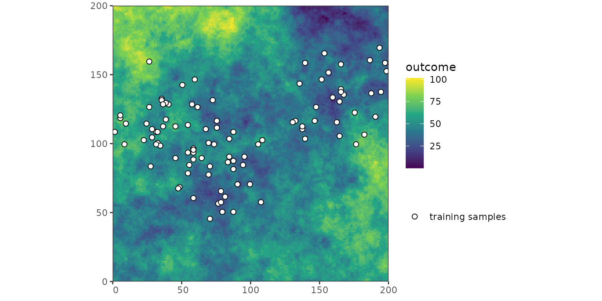
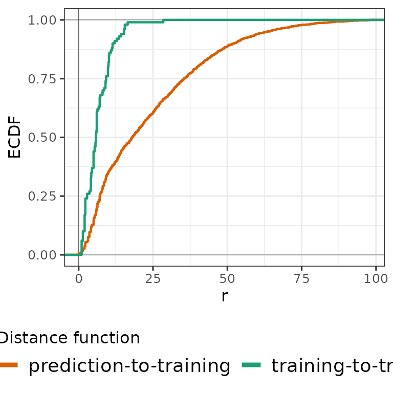
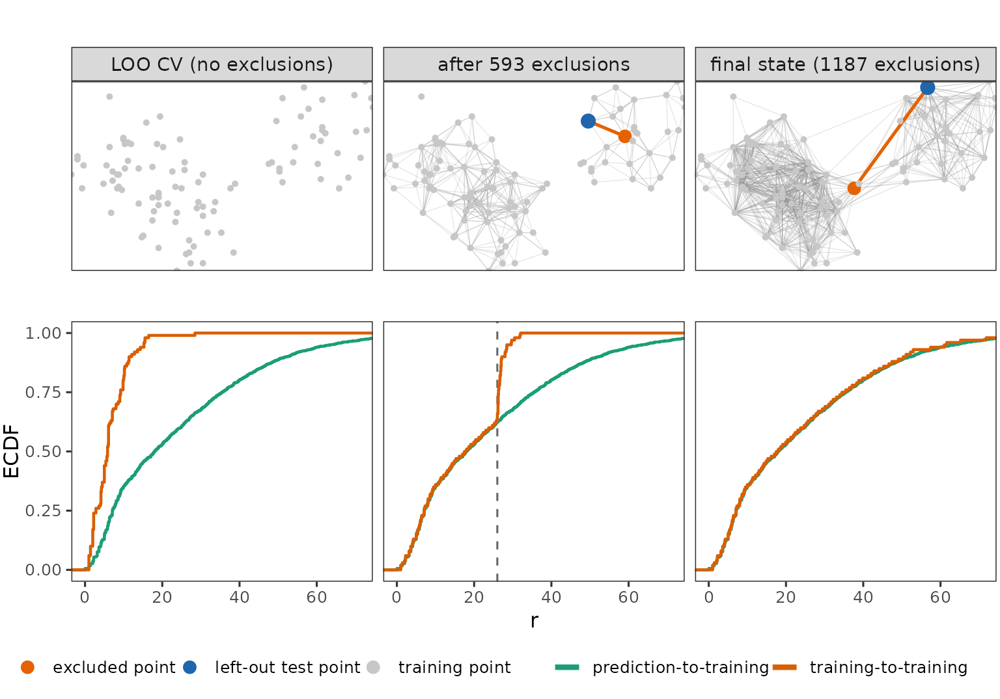

NNDM
NNDM.RmdIntroduction
Nearest-neighbour distance matching (NNDM) leave-one-out (LOO) cross-validation was developed by Milà et al. (2022). It matches the distribution of nearest-neighbour distances (NNDs) encountered during CV to the one encountered during prediction. This is achieved by excluding a variable number of the nearest training points of each left-out point from the training set. Because NNDM is LOO-based, it requires as many model fits as there are training points. It is therefore more flexible, but also considerably slower, than kNNDM. NNDM is best suited to small datasets, and kNNDM should be preferred for larger ones.
Three NND distributions are involved:
- Ĝij: the empirical distribution of distances from each prediction point to its nearest training point;
- Ĝj: the empirical distribution of distances from each training point to its nearest other training point, i.e. the NND distribution of plain LOO CV;
- Ĝj*: the modified version of Ĝj produced by NNDM, which is matched to Ĝij.
- Compute Ĝij and Ĝj.
-
Choose φ, the distance up to which matching is performed. By
default (
phi = “max”) the maximum observed distance is used, so matching covers the entire range. Alternatively, an estimate of the autocorrelation range can be supplied; beyond φ no training points are excluded and all data are used for training. -
Derive Ĝj, starting from plain LOO CV
(Ĝj = Ĝj) and
processing all training-point NNDs in increasing order. For the current
distance r, which belongs to left-out point j and its
nearest remaining training point k:
- check whether removing k from the training set of j would still leave Ĝj*(r) ≥ Ĝij(r), i.e. whether CV distances are still shorter than prediction distances at r;
-
check whether fold j would still retain at least
min_train(default 50%) of the training data; - if both conditions hold, exclude k from fold j and update Ĝj*; otherwise leave fold j unchanged. Exclusions are never undone;
- move on to the next-smallest NND, and stop once it exceeds φ.
-
Return, for each left-out point, the indices of the test point, the
retained training points and the excluded points
(
indx_test,indx_train,indx_exclude).
Setup
library(PDAV)
library(terra)
#> terra 1.9.46
library(sf)
#> Linking to GEOS 3.12.1, GDAL 3.8.4, PROJ 9.4.0; sf_use_s2() is TRUE
library(simsam)
library(ggplot2)
library(cowplot)
library(tidyterra)
#>
#> Attaching package: 'tidyterra'
#> The following object is masked from 'package:stats':
#>
#> filter
library(ggnewscale)
library(dplyr)
#>
#> Attaching package: 'dplyr'
#> The following objects are masked from 'package:terra':
#>
#> intersect, union
#> The following objects are masked from 'package:stats':
#>
#> filter, lag
#> The following objects are masked from 'package:base':
#>
#> intersect, setdiff, setequal, union
set.seed(100)
k <- 2Example data
Simulate predictors and response
r <- PDAV:::generate_rast()
predictor_stack <- r[[setdiff(names(r), "outcome")]]
cate_rasters <- which(names(r) %in% c("forest", "grass"))
samples <- PDAV:::generate_samples(r, 100) |>
filter(sampling == "biased")
samples$point_id <- 1:nrow(samples)
samples <- select(samples, point_id)
Figure 1: The predictor stack

Figure 2: The simulated outcome with training locations.


NNDM in geographical space
1. Compute Gj and Gij
Firstly, the NNDM algorithm calculates the distribution of NND between samples (Gj), as well as the distribution of NNDs between prediction points and samples (Gij). The calculation of NNDs is shown in the following figure: the nearest neighbour distance between samples is shown in the left panel, while the right panel shows nearest neighbour distances between prediction points and samples.

Figure 3: The Nearest-Neighbour distances between training points (left) and between prediction and training points (right).
To characterize the distribution of these NNDs, their empirical cumulative density functions (ECDFs) are calculated:
# Compute nearest neighbour distances between training and prediction points
Gij <- sf::st_distance(prediction_points, samples)
units(Gij) <- NULL
Gij <- apply(Gij, 1, min)
# Compute distance matrix of training points
tdist <- sf::st_distance(samples)
units(tdist) <- NULL
diag(tdist) <- NA
Gj <- apply(tdist, 1, function(x) min(x, na.rm = TRUE))
Figure 4: The two Empirical Cumulative Density Functions (ECDFs) corresponding to the Nearest-Neighbour Distances (NNDs) between prediction and training points (orange) and between training points (green).
2. Calculate Gj* for each left-out point starting from LOO-CV
Secondly, the algorithm starts with the smallest NND found among the training points, i.e. with the left-out point j whose nearest training point k is closest. It then tests whether excluding k from the training set of j would keep Ĝj*(r) ≥ Ĝij(r) at that distance r – that is, whether CV distances are still shorter than prediction distances there – and whether fold j would still retain at least min_train (50% by default) of the training data. If both hold, k is excluded from that fold only; it remains available for training in all other folds. The algorithm then moves on to the next-smallest NND, which usually belongs to a different left-out point. Otherwise the exclusion is skipped and the algorithm proceeds to the next-larger NND. This continues until the current distance exceeds φ.
# initialize Gjstar
Gjstar <- Gj
min_train <- 0.5
dimnames(tdist) <- NULL
tdist0 <- tdist # keep an untouched copy for plotting
# select the held-out point (jmin) with the closest distance to its nearest training point (kmin)
rmin <- min(Gjstar)
jmin <- which.min(Gjstar)[1]
kmin <- which(tdist[jmin, ] == rmin)
# set phi to the maximum relevant distance
phi <- max(c(Gij, c(tdist)), na.rm = TRUE) + 1e-9
# Check if removing the point yields a higher Gjstar than the target Gij
# Target Gij (at the current distance):
current_Gij <- (sum(Gij <= rmin) / length(Gij))
# Gjstar that would result from excluding the training point:
current_Gjstar <- (sum(Gjstar <= rmin) - 1) / length(Gjstar) # -1: if kmin were excluded, the NND of point jmin would exceed rmin,so it would no longer be counted
Gjstar_greater_check <- current_Gjstar >= current_Gij
# Check if the minimum number of training data is preserved:
min_train_check <- sum(!is.na(tdist[jmin, ])) / ncol(tdist) > min_train
# for plotting only: create a list that captures the output of the algorithm
snap <- list(list(j = NA_integer_, k = integer(0), r = NA_real_, Gjstar = Gjstar))
# If both checks pass, proceed with the NNDM algorithm:
while (rmin <= phi) {
if (
(sum(Gjstar <= rmin) - 1) / length(Gjstar) >= sum(Gij <= rmin) / length(Gij) &&
sum(!is.na(tdist[jmin, ])) / ncol(tdist) > min_train
) {
tdist[jmin, kmin] <- NA
Gjstar <- apply(tdist, 1, min, na.rm = TRUE)
snap[[length(snap) + 1L]] <- list(j = jmin, k = kmin, r = rmin, Gjstar = Gjstar)
rmin <- min(Gjstar[Gjstar >= rmin])
} else if (sum(Gjstar > rmin) == 0) {
break
} else {
rmin <- min(Gjstar[Gjstar > rmin])
}
jmin <- which(Gjstar == rmin)[1]
kmin <- which(tdist[jmin, ] == rmin)
}
indx_exclude <- lapply(seq_len(nrow(tdist)), \(i) setdiff(which(is.na(tdist[i, ])), i))The following Figure shows the sequential removal of points in the
NNDM algorithm. It starts from plain LOO CV (left) to the completed
matching (right). In each column the algorithm is processing the current
nearest-neighbour distance r (dashed line in the bottom
row): the left-out point is blue, the neighbour excluded from its fold
orange, and faint grey lines show all pairs excluded earlier. The blue
point differs between columns because distances are processed in
increasing order across all folds, not fold by fold. r
grows from left to right, so the orange link becomes longer. In the
bottom row Ĝj* is adjusted from short NNDs
resulting from plain LOO CV towards the target Ĝij. The right
panel is the last iteration that produced an exclusion that was accepted
(the maximum distance allowed by φ would have been 202, but the maximum
exclusion distance was 87).

Figure 5: Sequential exclusion of training points in the NNDM algorithm, from plain LOO CV (left) to the final state (right). Top row: left-out point (blue), the neighbour excluded from its fold (orange) and pairs excluded in earlier iterations (grey lines). Bottom row: target Ĝij and current Ĝj*, with the dashed line at the distance r being processed.